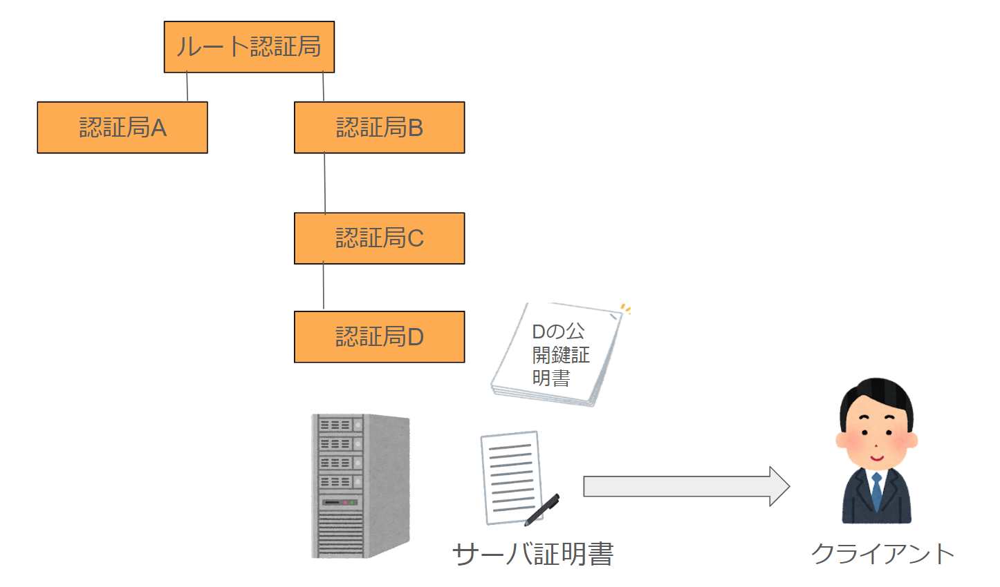
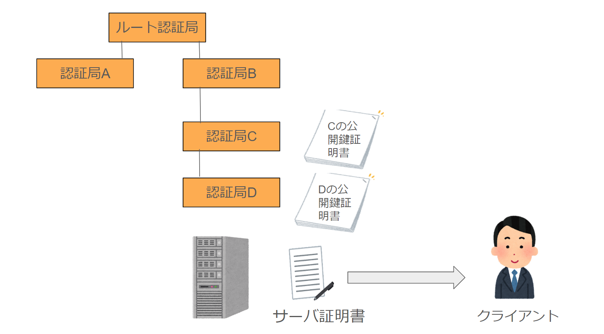
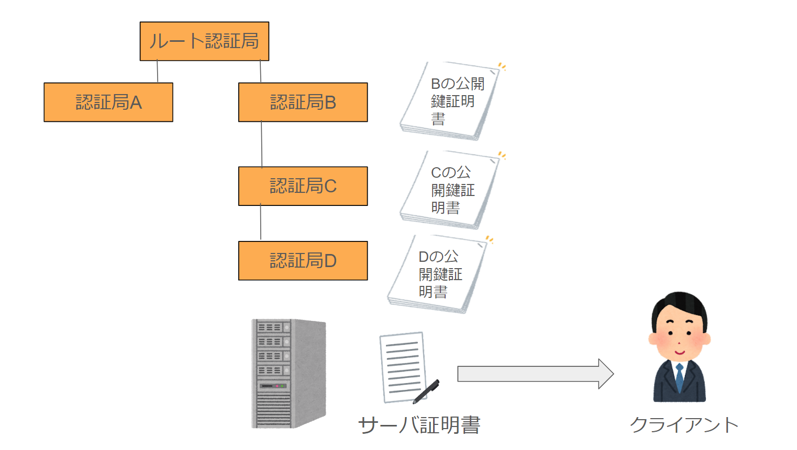
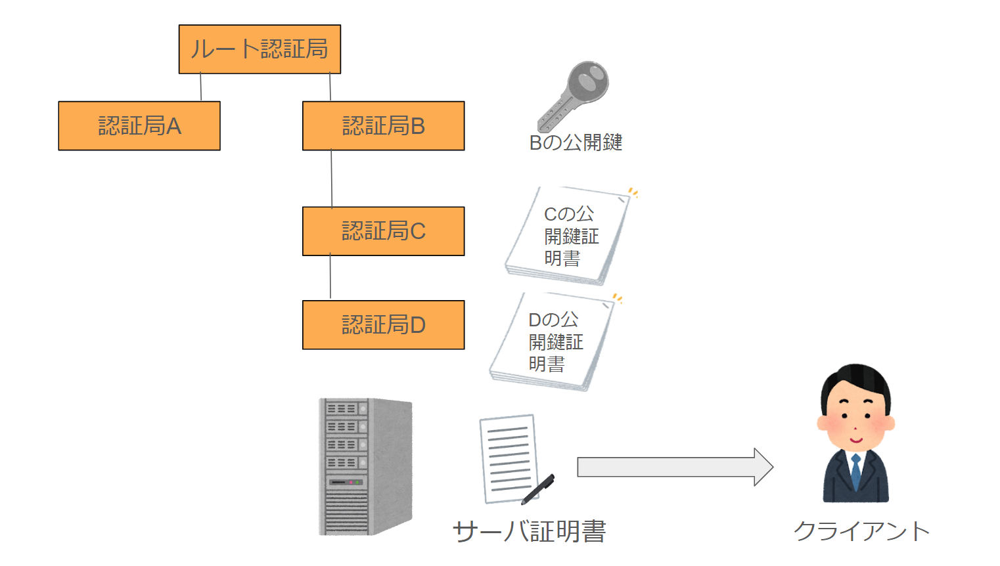
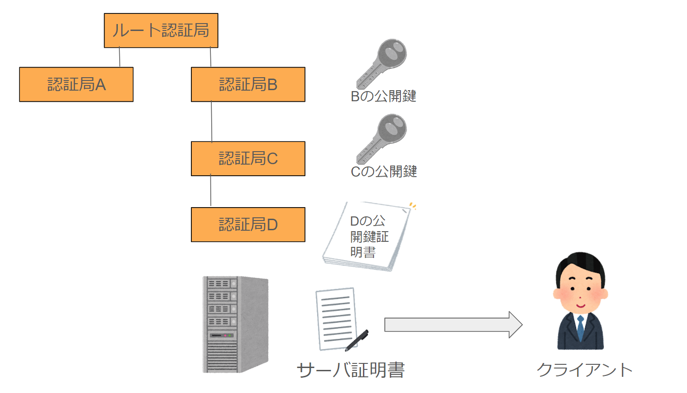
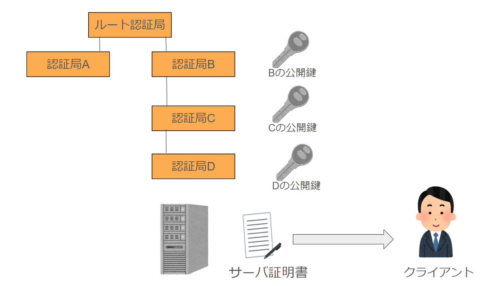
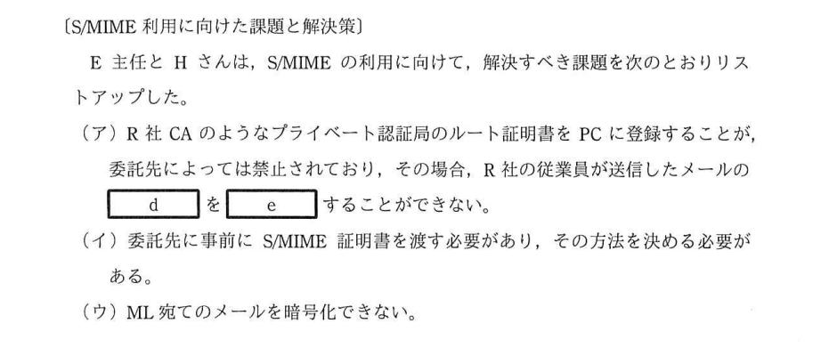

認証局は階層構造になっており、下位の認証局は上位の認証局に証明書を発行してもらっている。
前提知識
そもそも認証局って？ => 認証局は電子文書のやり取りで重要な役割を果たす電子署名の信頼性を高めるための認証を行っている第三者機関であり、 具体的な役割は本人確認と電子証明書の発行と電子証明書の失効などが挙げられる。
認証局には「パブリック認証局」と「プライベート認証局」の2種類があります。パブリック認証局は社内に閉じられた範囲ではなく、 広い範囲で公に対して証明を行うことのできる認証曲で、監査法人による審査の上、規格に合格した信頼性の高い機関です。一方でプライベート認証局は、社内等閉じられた範囲で、 企業ポリシーに基づき運用される前提のものになります。
また最上位のルート認証局の配下の認証局を中間認証局といいます。
上記画像のようにサーバはクライアントにサーバ証明書を送付します。この時に送られてきたサーバ証明書は認証局Dによって認証されています。つまり認証局Dの秘密鍵で暗号化されており、認証局Dの公開鍵で検証する必要があります。 クライアントは検証を行うために、認証局Dの公開鍵を取得するため認証局Dの公開鍵証明書を取得します。
認証局Dの公開鍵証明書は認証局Cによって認証されています。つまり認証局Cの秘密鍵で暗号化されているため認証局Cの公開鍵が必要です。認証局Cの公開鍵を取得するためには認証局Cの公開鍵証明書を取得する必要があります。
まったく同じように、認証局Cの公開鍵証明書は認証局Bによって認証されています。つまり認証局Bの秘密鍵で暗号化されているため認証局Bの公開鍵が必要です。認証局Cの公開鍵を取得するためには認証局Bの公開鍵証明書を取得する必要があります。
認証局Bの公開鍵証明書はルート認証局によって認証されています。つまりルート認証局の秘密鍵で暗号化されているためルート認証局の公開鍵が必要です。このようなルート認証局までの道のことを認証パスといいます。 通常ルート認証局の公開鍵はPCに登録してあるので、ルート認証局の公開鍵を使用し、ルート認証局の直下の認証局Bの公開鍵証明書を検証して、認証局Bの公開鍵を取得します。
ここで認証局Bの公開鍵を取得できたということは、の認証局Cの公開鍵証明書を検証することができるので認証局Cの公開鍵を取得できます。
さらに認証局Cの公開鍵を取得できたということは、の認証局Dの公開鍵証明書を検証することができるので認証局Dの公開鍵を取得できます。
上記の画像のように、認証局Dの公開鍵を取得出来たら、サーバ証明書を検証することでサーバの真正性を確認できてサーバの公開鍵を取得することが可能になります。これが一連の認証局の流れになります。
ルート認証局の設定について
先ほどパブリック認証局に触れました。 あらかじめブラウザのベンダやOSのベンダがパブリック認証局のルート証明書情報を設定してくれてるので、そもそもルート認証局の証明書の偽装や、なりすまし等を疑わずに使用することができます。
一方で、プライベート認証局のルート証明書を使用する際は、利用するPCなどにルート証明書を登録する必要があります。例えばR社が自身のルート証明書を発行して、 それをもとに会社関係者とやり取りをする場合はクライアントPCなどにR社ルート証明書を安全に渡して登録する必要が出てきます。R社ルート証明書を登録し無かった場合は公開鍵を取り出せないのディジタル署名を検証することができなくなります。
ここで令和2年秋 情報処理安全確保支援士試験 午後1 問2の問題の一部を見てみます。
先ほど説明した通り、R社のプライベート認証局のルート証明書をクライアント先のPCに登録できない場合、R社の公開鍵を取得できないため、R社が自身の秘密鍵で作成したディジタル署名をクライアントは検証することが不可能になります。
よってd=ディジタル署名、e=検証 となります。